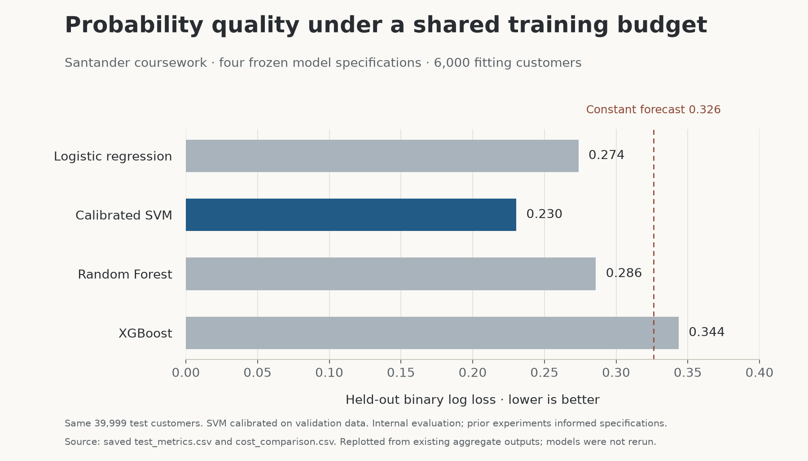

Machine learning · Individual NEC coursework
A fair classification comparison
SVM test log loss: 0.2304. Recall at 0.5: 27.0%.
An academic Santander benchmark exercise comparing four classification models on anonymized course data with a shared training budget and identical evaluation rows.
Independent NEC coursework on an anonymized competition dataset. This project is separate from my employment at Santander and was not deployed in bank systems.
Approach
- Used a stratified split with 6,000 common fitting customers and separate validation and test sets of 39,999 customers each.
- Learned imputation and scaling from fitting rows, keeping test data outside preprocessing and calibration.
- Compared held-out binary log loss and ROC AUC, then examined accuracy, precision and recall at a 0.50 cutoff.
- Checked training-to-test loss and calibration to explain overconfidence and class-imbalance effects.
Results
Log loss lower is better; test results on 39,999 customers. Accuracy and recall use a 0.5 threshold.
| Model | Log loss | ROC AUC | Accuracy | Recall |
|---|---|---|---|---|
| Logistic regression | 0.2737 | 0.7896 | 90.37% | 17.79% |
| Calibrated SVM | 0.2304 | 0.8638 | 91.36% | 26.97% |
| Random forest | 0.2859 | 0.7693 | 89.95% | 0.00% |
| XGBoost | 0.3436 | 0.8234 | 90.54% | 8.31% |
Random forest’s 89.95% accuracy coincides with zero recall at this threshold. A single accuracy score is not enough.


What I learned
The always-negative baseline already achieves 89.95% accuracy. The comparison makes the practical tradeoff visible: a model can look accurate while missing most positive cases, so probability quality and recall belong beside the headline score.
Limits
These are saved results from an internal course-data comparison. Prior experiments informed the frozen specifications, and only the SVM was recalibrated. The 6,000-row fitting budget limits the comparison. Anonymized features cannot be explained as specific customer behaviors, and no financial savings or deployment performance is claimed. Models were not retrained during portfolio preparation.
Next step
Choose a decision threshold using explicit costs for missed positives and false alarms, then evaluate calibration and performance on fresh data with equivalent tuning budgets.